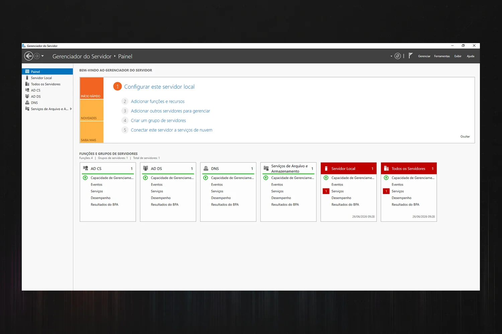
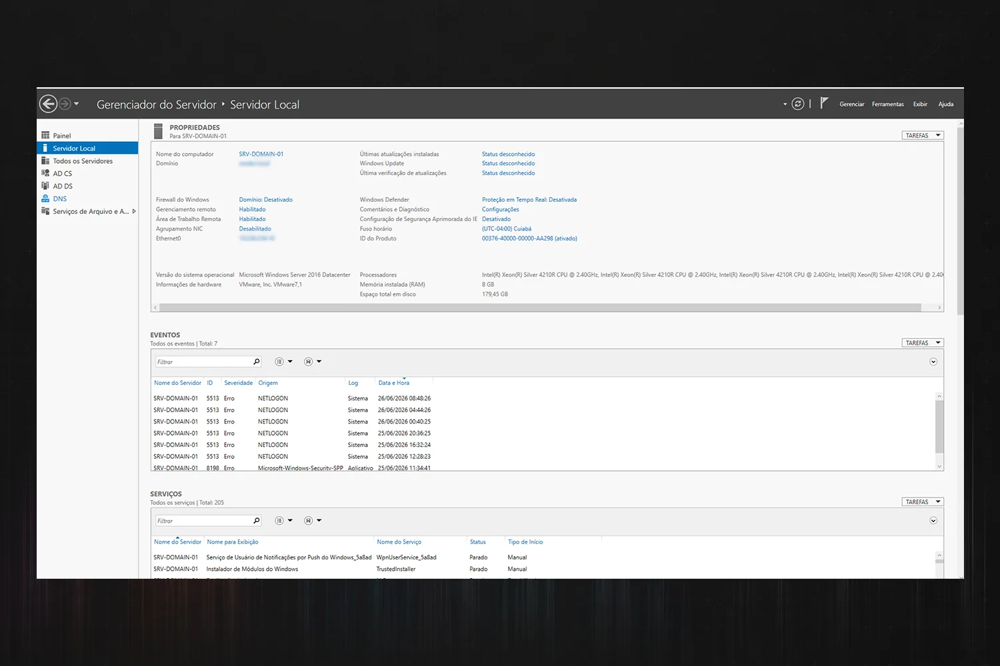
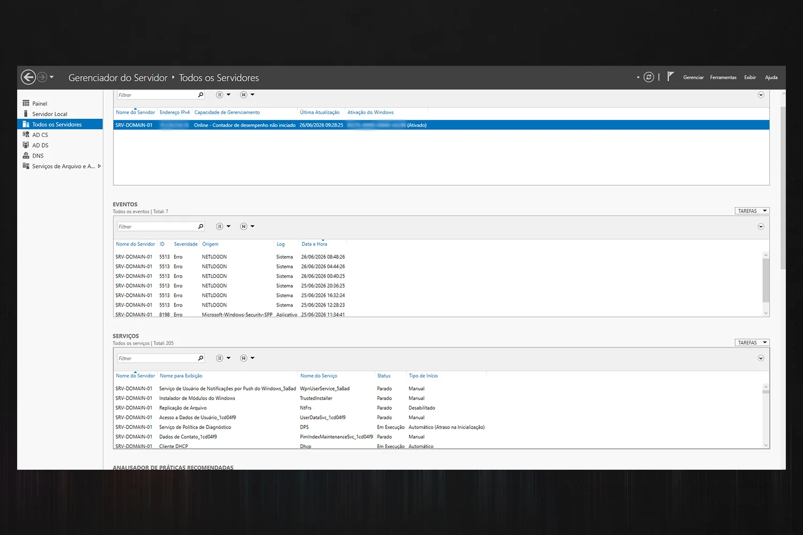
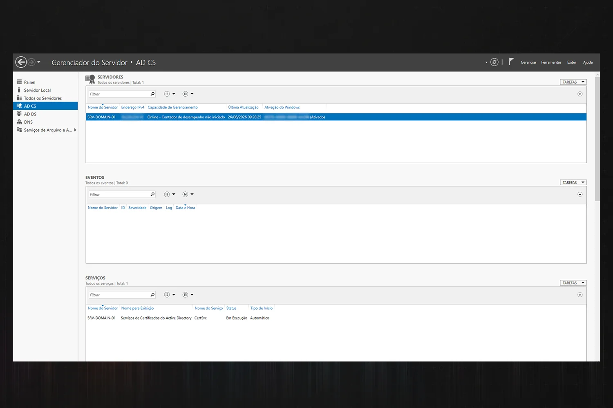
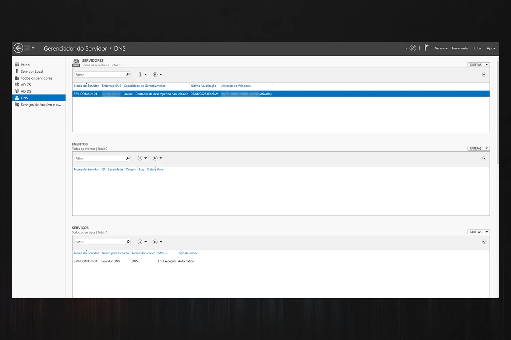
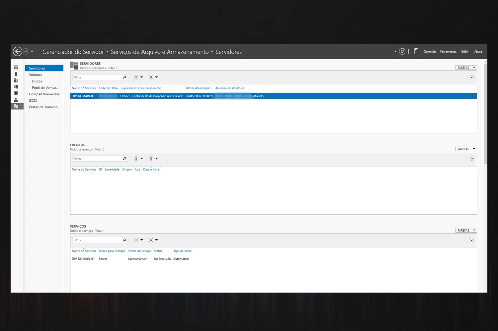
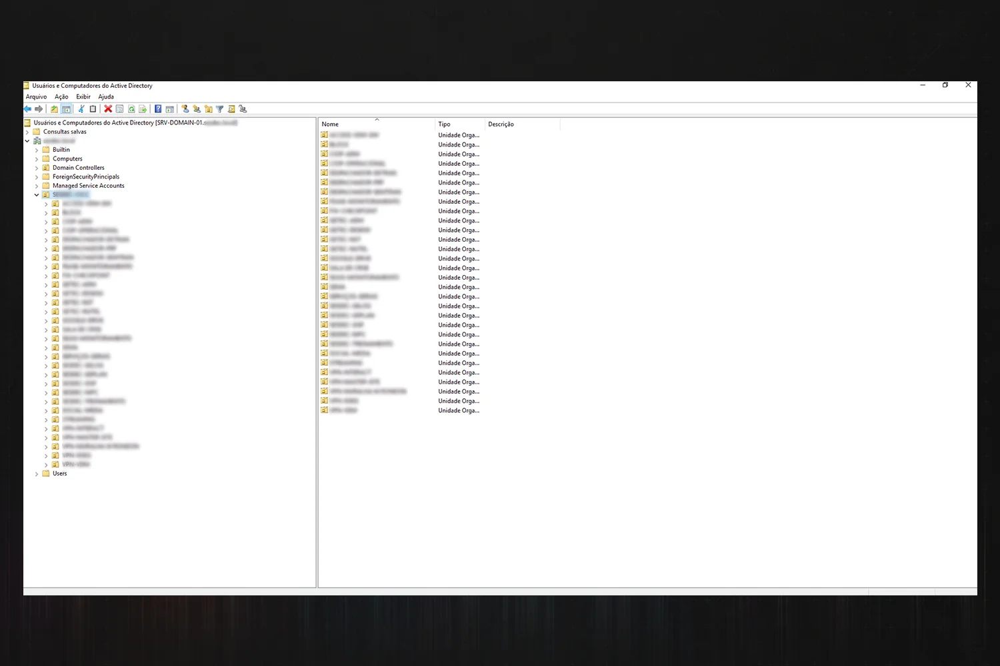
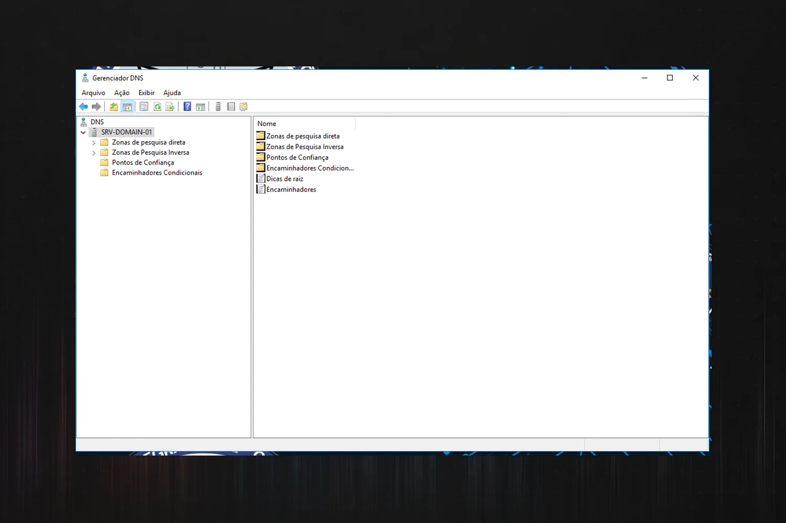
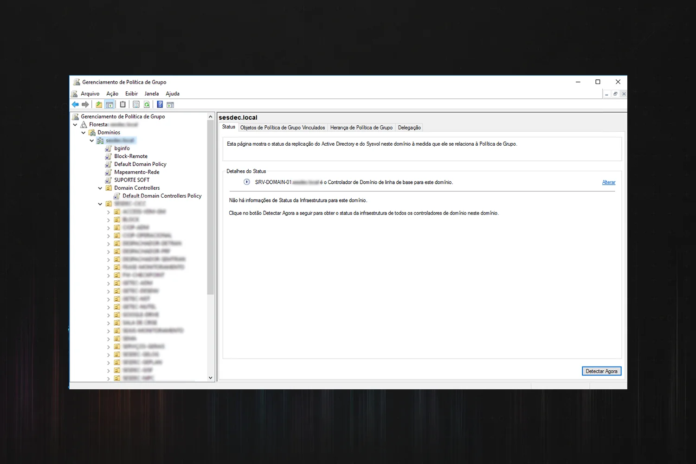
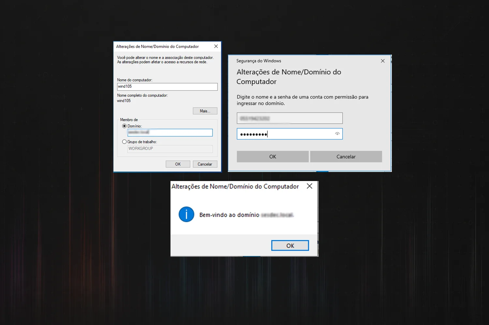

Infraestrutura Microsoft
Ambiente Windows Server Corporativo
Infraestrutura Microsoft com domínio, políticas, serviços de rede e governança técnica.
Visão Geral
O case apresenta uma infraestrutura Microsoft, cobrindo autenticação centralizada, serviços de rede, políticas de grupo e serviços de apoio para clientes Windows.
Desafio Técnico
O cenário exige estruturar uma base confiável de identidade, nomes, endereçamento e governança técnica para padronizar operação, acesso e serviços essenciais em ambiente corporativo.
Solução Desenvolvida
O ambiente foi reorganizado como narrativa técnica segura: rede controlada, promoção de servidor a controlador de domínio, configuração de DNS e DHCP, ingresso de clientes no domínio e aplicação de políticas via GPO, com serviços adicionais de apoio.
Arquitetura / Fluxo
Ilustrações Técnicas
Registros visuais, diagramas ou representações técnicas utilizados para contextualizar a arquitetura, o fluxo e os resultados do projeto.










Entregas Técnicas
- Estrutura de domínio centralizado.
- Serviços de nomes e distribuição de endereços.
- Políticas de grupo para padronização.
- Sequência técnica de implantação e operação.
Competências Demonstradas
- Administração de domínio Windows.
- Planejamento de rede interna.
- Governança por GPO.
- Configuração de serviços de infraestrutura.
- Documentação técnica orientada a ambiente corporativo.
Resultado Técnico
O material demonstra domínio de tarefas de infraestrutura Microsoft e capacidade de organizar a implantação em uma narrativa segura e coerente.